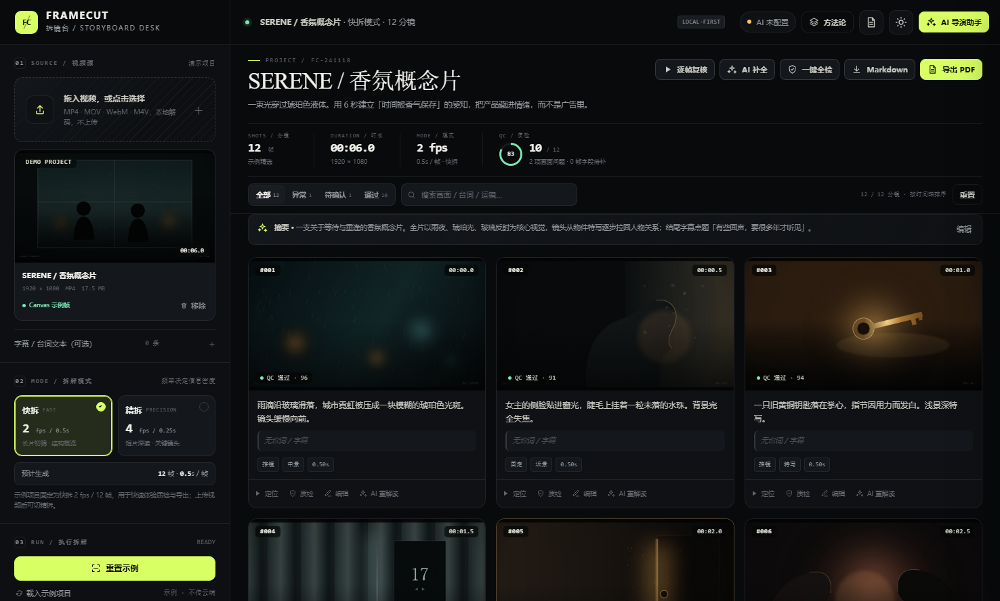
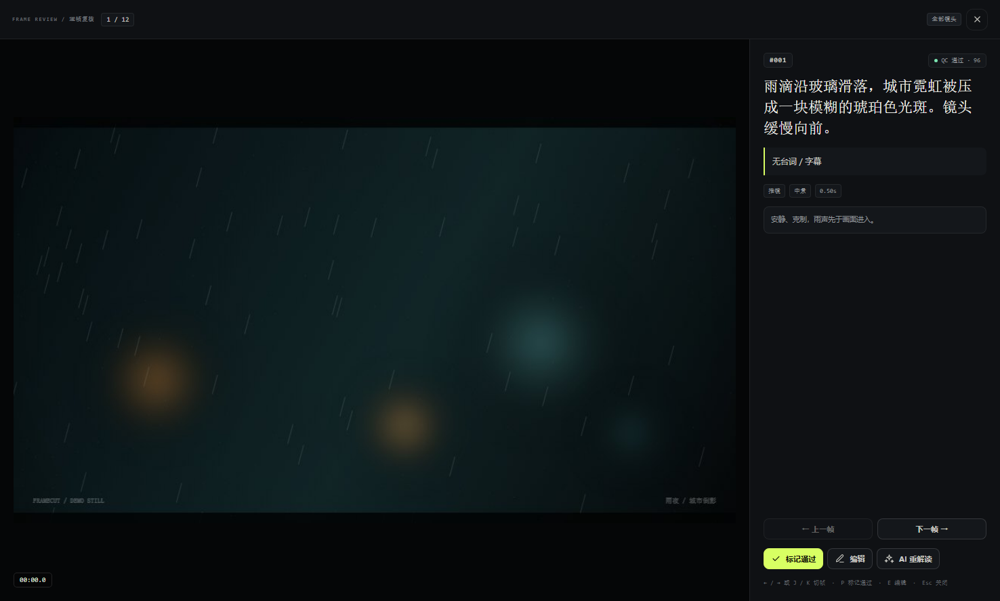
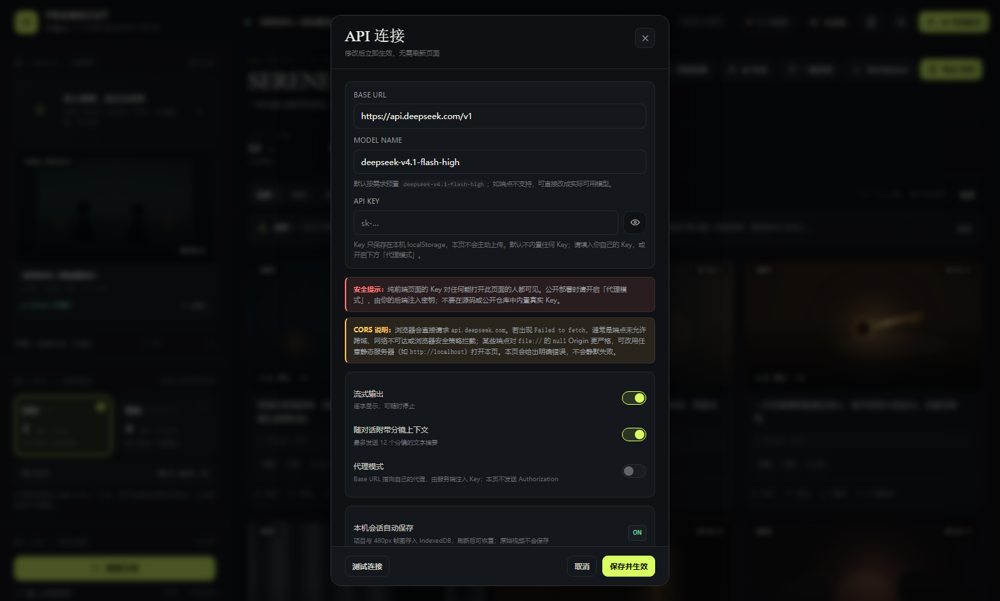
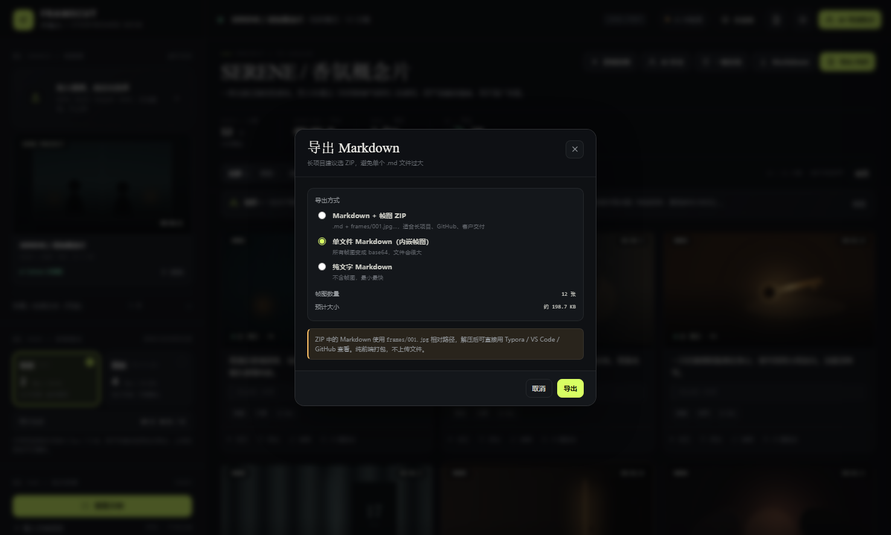

00 / QUICK START30 秒上手
01 / CHOOSE先选版本
| 网页版 | 桌面版 | |
|---|---|---|
| 打开 | 浏览器访问网址 | 双击 exe |
| 安装 | 不需要，可安装为 PWA | 安装版 / 便携版 |
| 系统 | Windows / macOS / 手机 / 平板 | Windows 10/11 x64 |
| 大视频长任务 | 一般 | 更稳 |
| 离线 | 首次加载后 | 完全离线 |
| 数据 | 浏览器 IndexedDB | 桌面应用本地存储 |
| 适合 | 分享、移动端、快速使用 | 长期本地工作 |
02 / WEB打开网页版
部署后访问 https://你的域名/。手机、平板、另一台电脑打开同一个地址即可。页面不绑定本机 IP，也不依赖 Windows 路径。
本地预览
cd framecut-web
python -m http.server 8080打开 http://127.0.0.1:8080/。
安装成桌面 / 手机应用（PWA）
- Chrome / Edge：地址栏右侧「安装」图标 → 安装
- Android Chrome：菜单 →「安装应用」
- iPhone Safari：分享 →「添加到主屏幕」
首次通过 HTTPS 打开后，Service Worker 会缓存应用壳；断网后仍能打开页面。项目数据仍在浏览器 IndexedDB 里。
127.0.0.1 只是本机预览。要让另一台设备/别人打开，必须部署到 Netlify、Cloudflare Pages、Vercel、GitHub Pages 或自己的静态服务器。03 / DESKTOP打开桌面版
FrameCut-1.0.0-portable.exe，无需安装，适合 U 盘或临时使用。FrameCut Setup 1.0.0.exe，按向导选择目录，可创建快捷方式。04 / SOURCE导入视频
支持拖拽或点击选择 MP4 / MOV / WebM / M4V 等浏览器可解码格式。
打不开怎么办
能否打开取决于浏览器/系统编解码器，不是扩展名。H.264 + AAC 的 MP4 最稳。先转码：
ffmpeg -i input.mov -c:v libx264 -pix_fmt yuv420p -c:a aac output.mp4单次上限
- 最多 3200 帧
- 2fps ≈ 26 分钟；4fps ≈ 13 分钟
- 超出会二次确认并截断
05 / MODE选择拆解模式
| 模式 | 频率 | 间隔 | 适合 |
|---|---|---|---|
| 快拆 FAST | 2fps | 0.5 秒/帧 | 长视频、剧情、口播、结构分析 |
| 精拆 PRECISION | 4fps | 0.25 秒/帧 | 短片、广告、动作/表演细读 |
- 11 分钟长视频：先快拆，关键段再局部精拆
- 30–60 秒广告：直接精拆
- 对话多、切镜慢：快拆足够
- 动作快、镜头短：精拆
06 / INTERFACE认识主界面

07 / QC质检与逐帧复核
两种问题分开看
- 画面问题：黑屏、过暗、过曝、模糊、低对比 → 决定 QC 通过/待确认/异常
- 字段问题：描述/台词/运镜/景别缺失 → 显示「字段待补」，不直接把画面判失败

| 操作 | 快捷键 |
|---|---|
| 上一帧 / 下一帧 | ← / → 或 J / K |
| 标记通过 | P |
| 编辑当前帧 | E |
| 关闭 | Esc |
适合 1000+ 帧长项目：不用在网格里翻页，直接一帧一帧过。改了模式/补了帧后，可点「一键全检」重跑；会覆盖人工标记，执行前有确认。
08 / API配置 API

直连模式
| 字段 | 示例 |
|---|---|
| BASE URL | https://api.deepseek.com/v1 |
| 视觉模型（看图/批量） | deepseek-flash（官方支持图片） |
| 文本模型（对话/摘要） | deepseek-v4-pro 或代理支持的文本模型 |
| API KEY | 你自己的 Key |
Key 只存本机 localStorage；默认不内置任何 Key。先点「测试文字」，再点「测试图片」——批量补全发的是图片，文字测试通过不代表图片能过。
reasoning_content，JSON 提取时可能把 token 用完、content 为空；关闭后批量才稳定。代理模式（公开部署推荐）
Base URL 填你的代理，例如：
https://framecut-api.<你的账号>.workers.dev/v1打开「代理模式」，页面不发送 Authorization，由 Worker 注入 Key。模板在 worker/，部署见 worker/README.md。
常见错误
| 报错 | 原因 | 处理 |
|---|---|---|
Failed to fetch | CORS / 网络 / HTTPS→HTTP | 换代理，检查 Base URL |
| 401 / 403 | Key 错 / 无权限 | 重填 Key，检查账户 |
| 404 | Base URL 或模型名错 | 确认 /v1 和模型名 |
| 429 | 限流/额度 | 降低批量，稍后再试 |
| 413 | 请求体过大 | 降低帧图尺寸/批量 |
09 / AIAI 补全
10 / EXPORT导出

统一交付文档
现在的 Markdown / PDF 会先把 AI 结果聚合成一份完整文档：人物档案（外貌、服装、出现区间、神态关键词）、台词与对话（时间、说话人、台词、语气）、全片分镜表（景别 / 视角 / 运镜 / 环境 / 光线 / 人物 / 神态变化）。
Markdown
- Markdown + 帧图 ZIP：
.md+frames/001.jpg，适合长项目/交付/GitHub - 单文件 Markdown（内嵌帧图）：一个 md 自带 base64 图，方便传阅但文件大
- 纯文字 Markdown：不含图，最小最快
ZIP 内是相对路径，解压后可直接用 Typora / VS Code 查看。
- 范围：全部 / 当前筛选 / 前 120 帧
- 抽样：1 / 2 / 4 / 8 帧
- 封面、摘要、分镜表、质检、附录
- 打印对话框勾选「背景图形」保留深色封面
项目 JSON
设置 →「导出项目 JSON」：含全部帧图、标注、QC、字幕、模式；换设备/换版本迁移用。1376 帧约 50–60MB，不含原视频。
11 / SAVE保存、恢复、迁移
12 / DEPLOY部署 / PWA
把 framecut-web/ 整个目录上传到任意静态主机即可，无 build command：
framecut-web。framecut-web。docs，Settings → Pages。index.html 所在目录。为什么说“不受本机设备限制”
- 纯静态：无后端、无固定服务器 IP
- 无
localhost/ Windows 路径硬编码 - 相对路径：根目录或子目录都能跑
- 响应式：手机 / 平板 / 桌面
- PWA：HTTPS 下可安装、可离线
https://你的域名/ 发给对方即可。跨设备数据不会自动同步，用项目 JSON。13 / FAQ常见问题
视频打不开怎么办？
先转 H.264 MP4，换 Chrome/Edge；MOV/HEVC 在部分浏览器不可解码。
抽帧很慢？
长视频用快拆；关闭其他占内存页面；1376 帧约 89 秒属正常。
竖屏画面被裁？
当前卡片用 4:5 容器 + object-fit: contain；刷新到最新版。
所有帧都「待确认」？
先看是不是「字段待补」；补描述后再全检。
AI 没反应？
先点「测试文字」，再点「测试图片」。图片失败通常是模型不支持 image_url；批量弹窗现在会直接显示具体错误。
AI 覆盖了描述？
编辑弹窗里点「撤销 AI」。
PDF 空白 / 没底色？
用 Chrome/Edge；打印时勾选「背景图形」；先导出小范围测试。
刷新后项目没了？
检查是否清了站点数据/换了浏览器；养成导出项目 JSON 的习惯。
恢复后不能重取帧？
原视频不保存，重新载入视频即可。
手机很卡？
长视频用桌面版；手机只做查看/轻量项目。
14 / LIMITS边界与隐私
- 视频只在浏览器内解码，不上传
- 使用 AI 时，帧图/文本会发送到你配置的 API 端点
- Key 只存本机 localStorage；公开部署用代理
- 项目数据存本机 IndexedDB；清站点数据会丢失
- 自动质检只覆盖机械问题，不替代人工判断
- 浏览器不支持的编码无法解码
- AI 可能编造人名/品牌/台词，必须核对
- 单次最多 3200 帧